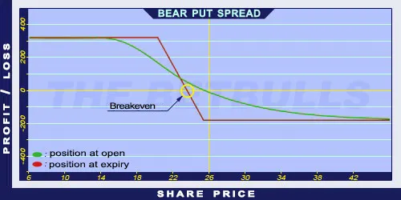

Description and use
Bear Put Spread is a spread strategy, because it consists of a Long and a Short position in a same time. It is also a vertical strategy, because the two positions have different strike prices. The investor expects the market prices to rather decrease than increase. Thus, the investor speculates on decreasing market pricing. This strategy should be used when the trader is not totally sure about the decreasing direction of the market. Then, he will sell a long-maturity, lower strike Put option and buy a higher strike OTM Put option with the same expiration. Compared to a simple Long Put option, Bear Put Spread has lower costs and Upper breakeven point. Profit will only be generated when the share prices actually decrease. When the share price is above strike price (Long Put), the position will be potentially lossmaking. When the share price is around the strike price of the Short Put, the profit will be maximised. The Long options are limited from below, the Short options are decreasing the initial costs. The investment is characterised by net debit, because the purchased options cost more than the sold OTM options. The strategy can be easily profitable when implemented correctly. It can even generate a 400% return. It is a long-term investment; the expiration is at least 6 months.
- Type: Bearish
- Transaction type: Debit
- Maximum profit: Limited
- Maximum loss: Limited
- Strategy: Vertical spread
Opening the Position
Bear Put Spread Option Positions involve purchasing lower strike Put options and selling higher strike Put options (same quantity and expiration as the other Put options’).
Steps
Entry:
- Make sure the trend is inclining.
Exit:
- When the share price is above the Stop Loss, sell the Long Put option and close the positions (if it is not possible to hold naked Put options).
Basic Characteristics
- Maximum loss: Limited. Premium (Long Put) - Premium (Short Put) = Net debit.
- Maximum profit: Limited. Difference between the strikes - Net debit.
- Time decay: Time decay has a positive effect on the value when the position is profitable, otherwise it has a negative effect. If the market is between the two strikes, then the time value is not changing rapidly. The profit increases the fastest with time close to the lower strike. The loss increases the fastest with time close to the higher strike.
- Breakeven point: Strike price (Short Put) - Net debit.
Advantages and Disadvantages
Advantages:
- The risks, the costs, and the breakeven point are lower than in the case of a Long Put.
- Limited loss.
Disadvantages:
- It can result in higher returns with lower strike prices, but the share prices must fall below those low strikes.
- In case of decreasing share prices, it has an upper limit.
Closing the Position
Buy back the Short options and sell the Long Put.
Mitigation of Losses
Close the position the above-mentioned way.
Example

Bear Put Spread strategy example
- ABCD is traded for $26.00 on 13.05.2017. The investor sells a Short Put option which has a strike price of $20.00, expires in January 2018, and costs $0.35 (premium). Then he buys a Long Put option which has a strike price of $25.00, expires in January 2018, and costs $1.80 (premium).
- Price of the underlying (share price): S= $26.00
- Premium (Long Put): LP= $1.80
- Premium (Short Put): SP= $0.35
- Strike price (Long Put): KL= $25.00
- Strike price (Short Put): KS= $20.00
- Net debit: D = LP - SP
- Maximum loss (risk): R = D
- Maximum profit: Pr = (KS - KL) - D
- Breakeven point: BEP = KS - D
- Net Debit (D) = $1.45
- Maximum Loss (R) = $1.45
- Maximum Profit (Pr) = $3.55
- Breakeven (BEP) = $23.55